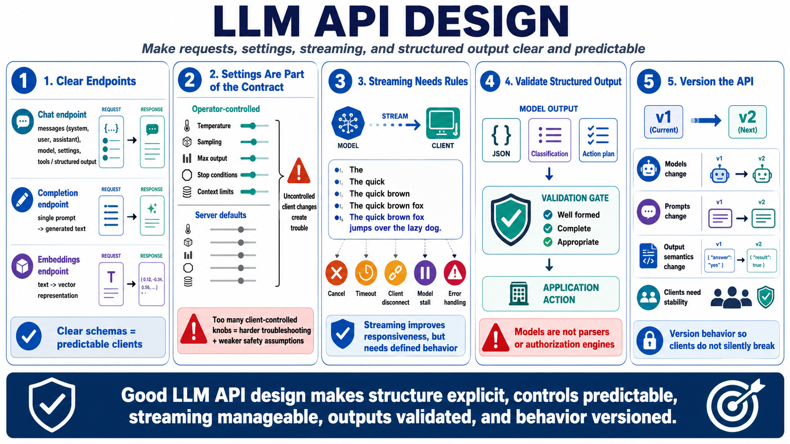

API Design for LLM Applications
Connecting to LMS... Progress: in progress

Narration
LLM API design should make request and response structure explicit. A chat endpoint usually accepts system, user, and assistant messages, model selection parameters, generation settings, and possibly tool or structured output options. A completion endpoint may accept a single prompt. An embeddings endpoint usually accepts text and returns vector representations. Clear schemas help clients send predictable requests and handle responses safely.
Generation settings should be treated as part of the API contract. Temperature, sampling controls, max output length, stop conditions, and context limits can affect behavior dramatically. Some applications should expose these settings to trusted operators, while others should enforce server-side defaults. If clients can change everything, troubleshooting becomes difficult and safety assumptions may no longer hold.
Streaming responses are useful when users benefit from seeing partial output as it is generated. Streaming can improve perceived responsiveness, but it also complicates cancellation, timeout behavior, logging, error handling, and client code. A robust API should define what happens when a request is canceled, when the model stalls, when the client disconnects, or when the service cannot finish within expected limits.
Structured output expectations need validation. If an application asks the model to return JSON, a classification, or an action plan, the downstream system should still verify that the output is well formed, complete, and appropriate for use. Models are not parsers or authorization engines. Version API behavior as models and prompts change so clients do not silently inherit incompatible output formats or changed semantics.